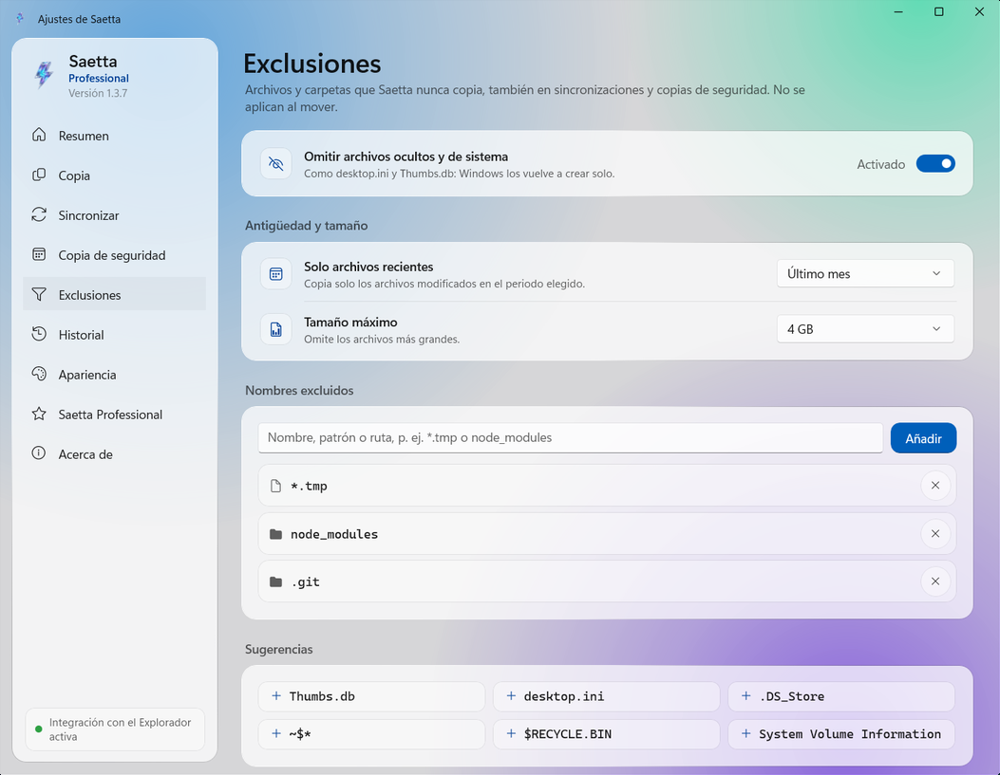

Saetta es el programa de copia para Windows que trabaja dentro del Explorador de archivos: copia miles de archivos hasta 25 veces más rápido, verifica que cada copia sea idéntica al original y no se detiene por un archivo bloqueado.
Saetta sustituye a la copia de Windows en las operaciones en las que es lenta. No cambia tu forma de trabajar: seleccionas los archivos en el Explorador de archivos, los copias y los pegas como siempre. El resto lo hace un motor de copia escrito desde cero.
Rápida
Gracias a un motor propio, optimiza cada transferencia adaptándose a las características físicas de SSD, discos duros, unidades USB y tarjetas SD.
Fiable
Si un archivo está bloqueado, Saetta no se detiene: lo vuelve a intentar, completa el resto de la cola y, al terminar la copia, te indica exactamente qué archivos no se han transferido.
Verificada
Cada archivo copiado se vuelve a leer del disco y se compara con el original, para garantizar su integridad.
Qué hace Saetta
Las funciones principales, una por una.
Copias ultrarrápidas
El Explorador de archivos copia un archivo tras otro. Saetta puede copiar los archivos en paralelo y elige el método según la unidad.
24,7×más rápido que el Explorador de archivos con 20.000 archivos pequeños: 7,7 segundos en lugar de 3 minutos y 11.
Saetta aparece en el menú contextual de Windows. Si activas la integración, también Ctrl+V, el arrastre de archivos y Supr abren Saetta.
Copiar, Cortar, Pegar y Eliminar
Copiar en… y Mover a…, también en varias carpetas a la vez
En las carpetas protegidas solo aparece el aviso de Windows
Verificada, archivo por archivo
Al terminar la copia, Saetta vuelve a leer cada archivo del disco, calcula su huella con algoritmos específicos y la compara con la del original. Si un solo byte es distinto, el archivo se señala.
Cómo funciona la verificación
OriginalInforme.docxxxHash3 · 9F2C 81D0 E41A
=
CopiaInforme.docxxxHash3 · 9F2C 81D0 E41A
Idéntico al original

Copia solo lo que hace falta
Elige exactamente qué copiar filtrando por nombre, tipo de archivo, tamaño o fecha, y excluye automáticamente archivos ocultos, temporales o carpetas enteras.
Todas las funciones
Las que llevan la etiqueta PRO requieren la licencia de Saetta Professional.
Copia ultrarrápida
Copia archivos y carpetas con un motor propio que es hasta 25 veces más rápido que el Explorador de archivos.
Verificación rápida de la integridad
Realiza la verificación de la integridad de cada archivo copiado.
Eliminación rápida
Elimina miles de archivos en pocos segundos con un motor de eliminación dedicado.
Gestión de duplicados
Si un archivo ya existe, eliges si conservar las dos versiones, reemplazarlo u omitirlo.
Gestión de errores
Un archivo bloqueado se indica con su causa y se puede volver a copiar por separado.
Exclusiones
Excluye archivos y carpetas por nombre, tipo, fecha o tamaño.
Integración con el Explorador de archivos
Copia, mueve y elimina desde el menú contextual del Explorador de archivos. Si quieres, también Ctrl+V, el arrastre de archivos y la tecla Supr funcionan con Saetta.
Acciones al terminar
Cuando termina la copia, Saetta puede suspender, hibernar o apagar el PC.
Historial y estadísticas
Cada operación registrada, con datos transferidos, duración y velocidad media.
Verificación de la integridad con más de 70 algoritmosPRO
BLAKE3, SHA-256, SHA-3, Whirlpool, CRC, TIGER y muchos más.
Reanudación tras una interrupciónPRO
Si el PC se apaga durante una copia, al volver a encenderlo Saetta la reanuda y comprueba los archivos ya copiados.
SincronizaciónPRO
Mantén alineadas dos carpetas, cuando tú quieras: con Espejo el destino se vuelve idéntico al origen, con Solo añadir copias los archivos nuevos y modificados sin eliminar nada. Con la vista previa ves antes qué se copiará y qué se eliminará.
Copias programadasPRO
Cada día, semana, mes o año, incluso con Saetta cerrado. Si el disco no está conectado, recibes un aviso.
Archivos de checksumPRO
Crea y verifica archivos .sha256, .md5, .b3, .sfv y otros formatos.
InformePRO
Al terminar cada trabajo genera un informe HTML o CSV con el resultado de cada archivo copiado.
Comando al terminarPRO
Ejecuta un comando o un script al terminar cada trabajo.
Borrado seguroPRO
Los archivos se eliminan sin dejar ningún rastro: ningún programa de recuperación podrá encontrarlos.
Límite de velocidadPRO
Reduce la velocidad de las copias para dejar libre el disco o la red mientras trabajas.
Saetta frente a la copia de Windows
Medimos tres operaciones habituales en el mismo PC y con los mismos archivos, todas en el mismo SSD. Cada barra indica el tiempo empleado: cuanto más corta, antes termina la operación.
Copiar 20.000 archivos pequeños
Archivos de 64 KB, 1,3 GB en total
24,7×más rápido
Explorador de archivos3 min 11 s
Saetta7,7 s
Archivos por segundo
105 → 2.594
Tiempo ahorrado
3 min 3 s
Eliminar 20.000 archivos
Con el motor de eliminación paralelo de Saetta
4,6×más rápido
Explorador de archivos13,0 s
Saetta2,8 s
Archivos por segundo
1.540 → 7.143
Tiempo ahorrado
10,2 s
Copiar 12 GB de archivos grandes
Tres archivos de 4 GB, como películas o imágenes de disco
−11 %tiempo
Explorador de archivos7,9 s
Saetta7,0 s
Velocidad media
1,64 GB/s → 1,84 GB/s
Tiempo ahorrado
0,9 s
Cuántas veces más rápido, según el tamaño de los archivos
La misma copia hecha con el Explorador de archivos y con Saetta, con archivos de distintos tamaños. Bajo cada barra, los tiempos de los dos programas.
10.000 archivos de 4 KBnotas, código fuenteExplorador de archivos 1 min 34 s · Saetta 4,1 s22,7×
20.000 archivos de 64 KBdocumentos, iconosExplorador de archivos 3 min 11 s · Saetta 7,7 s24,7×
10.000 archivos de 1 MBimágenes web, PDFExplorador de archivos 1 min 46 s · Saetta 6,4 s16,5×
640 archivos de 16 MBfotos RAW, músicaExplorador de archivos 15,4 s · Saetta 9,3 s1,7×
40 archivos de 256 MBvídeos cortosExplorador de archivos 6,3 s · Saetta 5,7 s1,1×
3 archivos de 4 GBpelículas, imágenes de discoExplorador de archivos 7,9 s · Saetta 7,0 s1,1×
Portátil con procesador Intel Core i7-9750H (6 núcleos), 16 GB de RAM y SSD Samsung 990 PRO de 2 TB: origen y destino en el mismo SSD, con los mismos archivos para los dos programas. Cada prueba se repitió tres veces por programa: mostramos el valor central. El tiempo incluye el inicio de Saetta y la escritura completa de los datos en el disco; al eliminar, los dos programas borran los archivos definitivamente, sin pasar por la Papelera de reciclaje. La carrera está acelerada y mantiene las proporciones reales de los tiempos.
Empieza gratis. Pasa a Professional cuando lo necesites.
Saetta Professional se activa directamente desde la aplicación, a través de Microsoft Store. El precio lo fija Microsoft Store y puede variar según el país.
Saetta
0 €Para siempre
Velocidad completa y todas las funciones básicas, sin límites de archivos ni de tamaño.
Copias rápidas, sin límites
Integración con el Explorador de archivos
Verificación de la integridad con xxHash3
Eliminación rápida
Copiar en… y Mover a…, exclusiones, historial
Saetta Professional
29,99 €Compra única
Una sola vez, sin renovaciones. La licencia está vinculada a tu cuenta de Microsoft y es válida en los PC en los que uses esa cuenta.
Todo lo de la versión gratuita, más:
Verificación con más de 70 algoritmos y archivos de checksum
Reanudación tras una interrupción
Sincronización y copias programadas
Informe, comando al terminar, borrado seguro, límite de velocidad
No. Saetta se integra en el Explorador de archivos y trabaja junto a él: lo usas desde el menú contextual y, si quieres, con Ctrl+V y Supr.
¿Están seguros mis archivos?+
Sí. Si cancelas una operación, se eliminan los archivos que quedaron incompletos, y los archivos que hay que reemplazar quedan intactos hasta que Saetta llega a escribirlos.
¿Saetta Professional es una suscripción?+
No. Es una compra única, gestionada por Microsoft Store y vinculada a tu cuenta de Microsoft.
¿Qué versiones de Windows son compatibles?+
Windows 11 y Windows 10 a partir de la versión 1809, en PC de 64 bits.
Prueba Saetta en tu próxima copia.
Es gratis en Microsoft Store y se instala en pocos segundos.